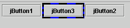
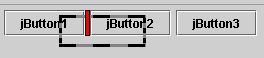
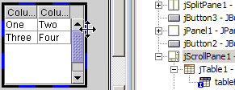

Here are some tips, mainly involving key strokes, which will increase your productivity.
Stopping & starting code parsing.
Since Jigloo will automatically parse any changes you make to your code, after a given delay, if you are making a lot of code changes, you will save time by turning parsing off, and on again when you have finished. Just hit Ctrl+Alt+P in the source editor to toggle code parsing on and off.Multi-selecting elements (by CTRL and selection marquee).


You can hold CTRL down when selecting elements in the form editor and this will multi-select the elements.Select a component in the Outline by holding Alt down while clicking in the source editor.
In addition, you can hold SHIFT down while dragging the mouse and a red rectangle (a selection marquee) will appear which you can drag around all the elements you wish to select (see figures). Note that to select an element you only need to intersect it with the marquee. Then any properties you change, or any resizing or moving or copy/cut/pasting you do will apply to all selected elements.
Normally, clicking or moving the cursor over a piece of code (eg a property setter) selects the relevant component in the form editor, but shows the java outline in the Outline view - holding Alt down while clicking on the mouse shows the component tree in the Outline view instead. This may not work on Linux systems where Alt may have a pre-defined function.Moving elements
Depending on the layout used by a container, components can be rearranged inside a container by dragging with the mouse.Copying & pasting elements
You can hold CTRL down when dragging one or more elements in the form editor and this will paste copies of the elements.Changing preferred sizes in GridBag and Form Layouts
When using a GridBag or JGoodies Form layout, normally resizing a component will change it's gridx/y/width/height values. However, by holding SHIFT down when resizing an element you will change the preferredSize property of an element, rather than it's gridx/y/width/height values.Changing an element's text property quickly.
Double-click on a button, label, group, etc in the Form Editor and a text field will appear, allowing you to edit it's text. This applies to any component which has a "text" property.
Custom components
How can I give my custom component an icon that will show up in Jigloo's "Custom" palette, instead of the default java-bean icon?
You need to create a BeanInfo class for your custom class, and define the getIcon method. For an example of how to do this, look at the Swing FlowerShop example which you can create by hitting CTRL+N, then in the "New" wizard, select "GUI Forms->Examples->Swing Inheritance/JavaBean (FlowerShop) example".
Miscellaneous
Maximize the main editor by double-clicking on it's name tag.
Fills Eclipse with the parts of Jigloo essential for designing forms.How to move a component that is behind another component.
Say you have a JPanel inside a JScrollPane and you want to move the JScrollPane - first select the JScrollPane in the Outline view, then click and drag a blue region of the selection border (which is made up of alternating black and blue regions.
Working with SWT classes not initially created by Jigloo
Problems
Why can't I change the location/size of my GUI elements?
Many Java GUIs built by hand or by other GUI builders can be modified succesfully by Jigloo, but for SWT GUIs you might want to use some Jigloo tools to migrate the code to a more Jigloo-friendly form:
For more details, read this.
- Migrate to using the SWTResourceManager to manage fonts, colors and images - do this by right-clicking anywhere on the Form Editor and choosing "Source->Convert to using SWTResourceManager"
- Insert a new showGUI method which will display the SWT Composite inside a Shell, using the size of the Composite (if it is defined) to set the size of the Shell.
Problems
Why can't I change the location/size of my GUI elements?
This is probably because of the layout manager you are using. For example, if you have a JPanel which uses a FlowLayout and you keep adding JButtons to it, then the JButtons will assume their most natural sizes - you will be able to change their sizes and re-order them but you will not be able to set their absolute position in the JPanel, since that is determined by the JPanel's layout manager. If you want to set the absolute position as well as size, then try using the Anchor or Absolute layouts (for Swing), or Form or Absolute layouts (for SWT).Errors with properties or fields not being recognized
But reading up a bit about the other layouts - the GridBag or JGoodies Form layouts for Swing, or the Grid layout for SWT can be particularly useful - will allow you to benefit from these layout managers.
<>If say Java 1.5 is used to run Eclipse, then the properties of Swing components generated by Jigloo will be those for Java 1.5, but if you use a Java 1.4 JRE inside Eclipse to build and run programs then some properties added by the Java 1.5 version will cause a compile error. The same goes for the SWT library - if SWT version 3 is used to run Eclipse, but SWT 2 is used to run and build programs inside Eclipse then you might get compile errors. The solution is to use the same Java or SWT libraries to run Eclipse as to run programs inside Eclipse.Problems on Linux
If you have problems on Linux/GTK (such as the "+" signs not expanding in the GUI Properties editor) then make sure you have version 2.1.1 of GTK and it's accompanying packages (pango, glib, atk) - a useful article, with download links is here: http://developer.gnome.org/doc/API/2.4/gtk/gtk-building.html